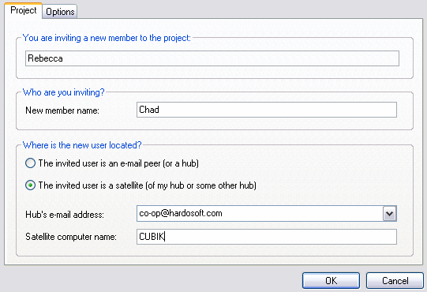

Generating an Invitation: Administrator
Code Co-op Pro
In the "Invite New Project Member" dialog, you have to enter the name of the new member and their location. There are two cases to chose from:
- The new member is an e-mail peer, or a hub. In that case, only the recipient's e-mail address is required. (If you're a satellite, you can send an invitation to your own hub too.)
- The new member is a satellite. In that case you have to provide the e-mail address of his or her hub (it could be the same as yours, if you're on the same network) as well as their computer name (the name under which their computer is visible on the network).
Notice: It is possible to send an invitation to yourself, if you want to have a second enlistment in the same project on your machine.

When you click OK, Code Co-op will pack all the project files into one invitation script and send it to the recipient. For large projects, this process may take a few minutes and the script may be split into multiple chunks, each sent in a separate message.
< Back
Next: Receiving an Invitation >